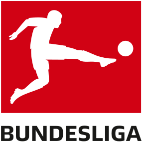

Before the formation of the football league there wasn’t much structure to how games were organised or who played whom. Teams would sort out their own games and cup matches, regularly ignoring the FA’s rules that professionals weren’t allowed to take part. In 1885 the Football Association buckled under the pressure and officially allowed the game to turn professional.
This proved to be a turning point for the game, in more ways than one. Where previously things had been slightly disorganised it now became absolute mayhem. Canny chairmen realised that they could increase their club’s income by having more and more games, from cup matches to inter-county matches to simple run-of-the-mill games, things were going on all of the time.
There are three Leagues you can choose from please choose and click the desired league you want to know
On the 20th of February 1992 when the teams in the First Division chose to break away from the Football League in order to take advantage of the ever more lucrative world of television broadcast rights. This decision coincided with a number of events, including the lifting of the ban on English clubs that had been in effect since The Heysel Disaster, as well as the recommendations of the Taylor Report into The Hillsborough Disaster for stadiums to become all-seater venues.An agreement had actually been reached and signed on the 17th of July 1991 regarding how the Premier League would work. It was called The Founder Members Agreement and all of the top clubs in the game were involved with it. The main points were that the new division would have commercial independence from the Football League; something that was particularly helpful when they negotiated their own broadcast deals.
The Premier League, often referred to as the English Premier League or the EPL outside England, is the top level of the English football league system. Contested by 20 clubs, it operates on a system of promotion and relegation with the English Football League (EFL). Seasons run from August to May with each team playing 38 matches (playing all 19 other teams both home and away).Most games are played on Saturday and Sunday afternoons.
Top 4 are qualified into Uefa champions league and Fifth and Sixth and seventh are qualified into Uefa euorpa league and last three are relegated into 2nd devision
Permier league theme song:
To close this window please click
Football arrived on Spanish shores during the late nineteenth century, spread by expatriate workers from England and Spanish students, returning from overseas placements. The oldest football club in Spain, Recreativo de Huelva, was founded in 1889 by British workers of the Rio Tinto company based in the southern region of the country, close to the border with Portugal. The first official football match in Spain was held in 1890, between Recreativo Huelva and Colonia Inglesa (a team made up of employees from the local water works) and involved no less than 20 British players. Athletic Club was later founded in 1898 made up of players from the dockyards in Southampton and Portsmouth, Durham miners as well as Basque students, and they later merged with the previously founded Bilbao Football Club in 1903 to create Athletic Club de Bilbao
Out of initiatives like the Catalan championship, nationwide football developed in the 1900’s and achieved completion in 1929, when La Liga was founded. In April 1927 Jose Acha, a director at Arenas Club de Getxo, first proposed the idea of a national league in Spain
The Campeonato Nacional de Liga de Primera División commonly known as La Liga (LaLiga Santander for sponsorship reasons with Santander), is the men's top professional football division of the Spanish football league system. Administered by the Liga Nacional de Fútbol Profesional (English: National Professional Football League), also known as the Liga de Fútbol Profesional, and is contested by 20 teams, with the three lowest-placed teams at the end of each season relegated to the Segunda División and replaced by the top two teams and a play-off winner in that division.
Top 4 are qualified into Uefa champions league and Fifth and Sixth and seventh are qualified into Uefa euorpa league and last three are relegated into 2nd devision
La Liga theme song:
To close this window please click

Through the 1950s, there were continued calls for the formation of a central professional league, especially as professional leagues in other countries began to draw Germany's best players away from the semi-professional domestic leagues. At the international level the German game began to falter as German teams often fared poorly against professional teams from other countries. A key supporter of the central league concept was national team head coach Sepp Herberger who said, “If we want to remain competitive internationally, we have to raise our expectations at the national level.”
Meanwhile, in East Germany, a separate league was established with the formation of the DS-Oberliga (Deutscher Sportausschuss Oberliga) in 1950. The league was renamed the Football Oberliga DFV in 1958 and was generally referred to simply as the DDR-Liga or DDR-Oberliga. The league fielded 14 teams with two relegation spots.Following German reunification, the East German leagues were merged into the West German system. Dynamo Dresden and F.C. Hansa Rostock were seeded into the top-tier Bundesliga division, with other clubs being sorted into lower tiers.
The Bundesliga (Federal League and sometimes referred to as die Fußball-Bundesliga or 1. Bundesliga) is a professional association football league in Germany and the football league with the highest average stadium attendance worldwide. At the top of the German football league system, the Bundesliga is Germany's primary football competition. The Bundesliga comprises 18 teams and operates on a system of promotion and relegation with the 2. Bundesliga. Seasons run from August to May. Most games are played on Saturdays and Sundays, with a few games played on weekdays
Top 4 are qualified into Uefa champions league and Fifth and Sixth and seventh are qualified into Uefa euorpa league and last two are relegated into 2nd devision

 Before the formation of the football league there wasn’t much structure to how games were organised or who played whom. Teams would sort out their own games and cup matches, regularly ignoring the FA’s rules that professionals weren’t allowed to take part. In 1885 the Football Association buckled under the pressure and officially allowed the game to turn professional.
This proved to be a turning point for the game, in more ways than one. Where previously things had been slightly disorganised it now became absolute mayhem. Canny chairmen realised that they could increase their club’s income by having more and more games, from cup matches to inter-county matches to simple run-of-the-mill games, things were going on all of the time.
Before the formation of the football league there wasn’t much structure to how games were organised or who played whom. Teams would sort out their own games and cup matches, regularly ignoring the FA’s rules that professionals weren’t allowed to take part. In 1885 the Football Association buckled under the pressure and officially allowed the game to turn professional.
This proved to be a turning point for the game, in more ways than one. Where previously things had been slightly disorganised it now became absolute mayhem. Canny chairmen realised that they could increase their club’s income by having more and more games, from cup matches to inter-county matches to simple run-of-the-mill games, things were going on all of the time.